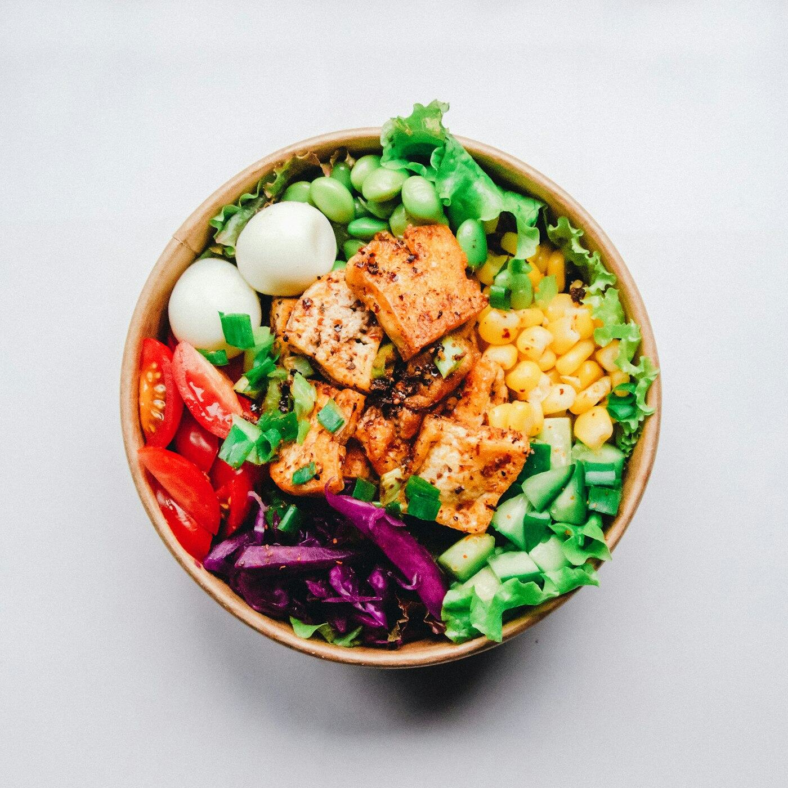

Available now
Restaurant Websites
A restaurant website should do three things well: make people hungry, make the practical details obvious, and make the next step easy. Each page is designed around your menu and your room — not a generic template.
- Custom-designed restaurant website
- Mobile-friendly layouts
- Digital menu
- Opening hours and location
- Contact information and buttons
- Clear calls to action
Included in the Basic Website package — $19 one-time setup, with a free GitHub Pages hosting option. Premium hosting and domain registration are separate and paid directly to the provider. See pricing.
